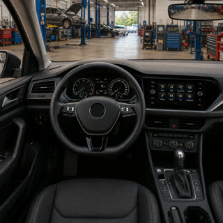

Prova de campo,
pronta em minutos.
Fotos guiadas, dados e assinatura num fluxo só. Cada vistoria vira um registro datado, salvo offline e impossível de contestar quando o cliente questiona.
em 4 minutos
sincroniza sozinho

PainelO problema01
Você reconhece esses problemas?
Quando a vistoria não fica bem registrada, sobra retrabalho, cliente desconfiado e nenhuma prova na hora em que aparece um dano. A gente sabe como isso cansa.
Papel que se perde
Fichas no papel e fotos soltas no WhatsApp somem justo quando o cliente questiona.
Tempo perdido
Montar o relatório à mão leva horas e atrasa a liberação do veículo.
Cada um de um jeito
Sem padrão entre vistoriadores, o resultado fica inconsistente e difícil de auditar.
Sem prova nenhuma
Quando surge um dano, falta o registro fotográfico e a assinatura para te proteger.
A solução · o fluxo02
Vistoria completa em 3 passos
É tudo guiado, então qualquer pessoa da equipe consegue fazer sozinha, sem treinamento e direto do celular.
Dados do veículo
Proprietário, placa, modelo e odômetro. Preenchimento rápido, com exemplos em cada campo.
Fotos guiadas
O app pede cada um dos 10 pontos: frente, lateral, motor, chassi e odômetro. Assim, nada fica para trás.
Assinatura e envio
Vistoriador e cliente assinam na tela. Finalize e envie o relatório completo em segundos.
O grande diferencial · sem sinal03
Sem internet? Sem problema.
No pátio, no subsolo ou na estrada, o Visttor não trava. Você trabalha offline e o sistema cuida do resto quando o sinal voltar.
Por que o Visttor04
Mais controle, menos dor de cabeça
Histórico sempre à mão
Toda vistoria fica guardada e organizada, fácil de encontrar e reenviar depois.
Padrão para a equipe
Todo vistoriador segue o mesmo roteiro. Qualidade consistente em toda vistoria.
Prova com assinatura
A foto datada e a assinatura do cliente ficam ao seu lado em qualquer discussão.
Gestão de vistoriadores
O admin controla a equipe, papéis e acessos em um só lugar, com total visibilidade.
Planos · sem fidelidade05
Comece grátis. Cresça quando precisar.
Sem fidelidade e sem surpresa. Você troca de plano ou cancela quando quiser.
- Limite de 1 Usuário
- Limite de 10 vistorias
- Fotos guiadas e assinatura digital
- Modo offline
- Relatório com sua logo
- Usuários ilimitados
- Vistorias ilimitadas
- Relatório em PDF com sua logo
- Histórico completo na nuvem
- Suporte prioritário em português
- Usuários ilimitados
- API e integrações
- Relatórios e exportações avançadas
- Gerente de conta dedicado
// Todos os planos incluem modo offline, atualizações e dados seguros · preços em BRL · sem taxa de instalação
Dúvidas frequentes06
Tudo que você precisa saber
Em 2 minutos você já tem sua primeira prova de campo.
Crie sua conta grátis e leve o Visttor para a sua equipe hoje mesmo. Sem instalação e sem cartão para começar.